My Stories
몇 달전 미리 예약한 제주도 여행이 오늘 출발하는데 비행 시간이 오후 2시이다.
내 생각에는 12시에 출발하여도 될 것 같은데 와이프는 오전 10시전에 나가야한다고 ㅡ_ㅡ
그래서 아침부터 부랴부랴 정리해서 단대오거리의 리무진 정류장에 도착하였는데
다행히 10시10분 차량이 있어 바로 탑승하여 김포공항으로 이동 하였다.
12시쯤 공항에 도착하여 티캣팅 후 간단히 점심식사로 왕갈비행장국을 시켰는데
바로 후회를 하였다는... ㅠ_ㅠ
공항 내부에 커피샾에 들려 여유롭게 차 한잔 한 후 오후1시 30분에 탑승 했다.
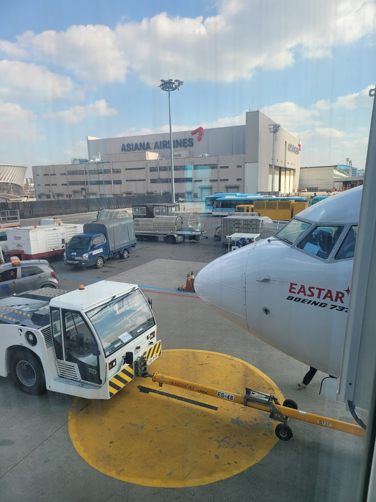비행 시간은 1시간 정도 걸려서 3시정도에 도착한 후 렌트카 회사 차량에 탑승하여
렌트카 장소로 이동하여 예약한 차량을 받았는데 모델은 모닝 어반, 가격도 저렵하고 연비도 좋아서
선택하였는데 키를 받고 운행을 해본 결과 너무 떨림이 심했다. 경유차량도 아닌데...
담당자에게 우선 해당 증상을 말하고 다른 차량 기아 K5 으로 받아서 운전을 하였다, 다행히 따로 추가 비용은 없었다는 @_@
재미있는 곳을 찾아봤더니 스누피가든 이라는 장소가 있어 방문하기로 했다.
장소에 도착해서 둘러보니 규모가 상당히 크고 내부 및 외부로 구분하여 카테고리에 맞게
구성되어 있어 아이들과 같이 오면 재이있어할 것 같다.
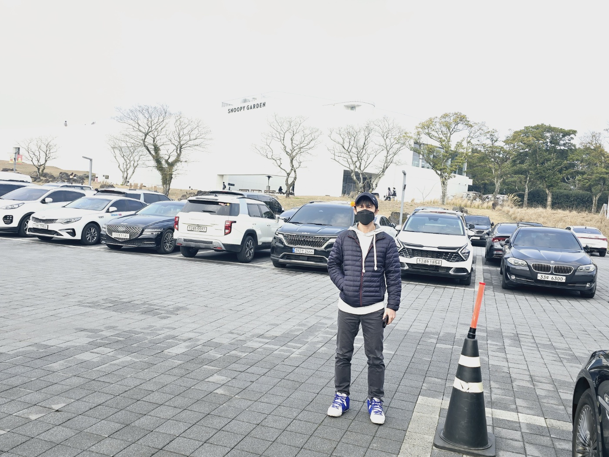 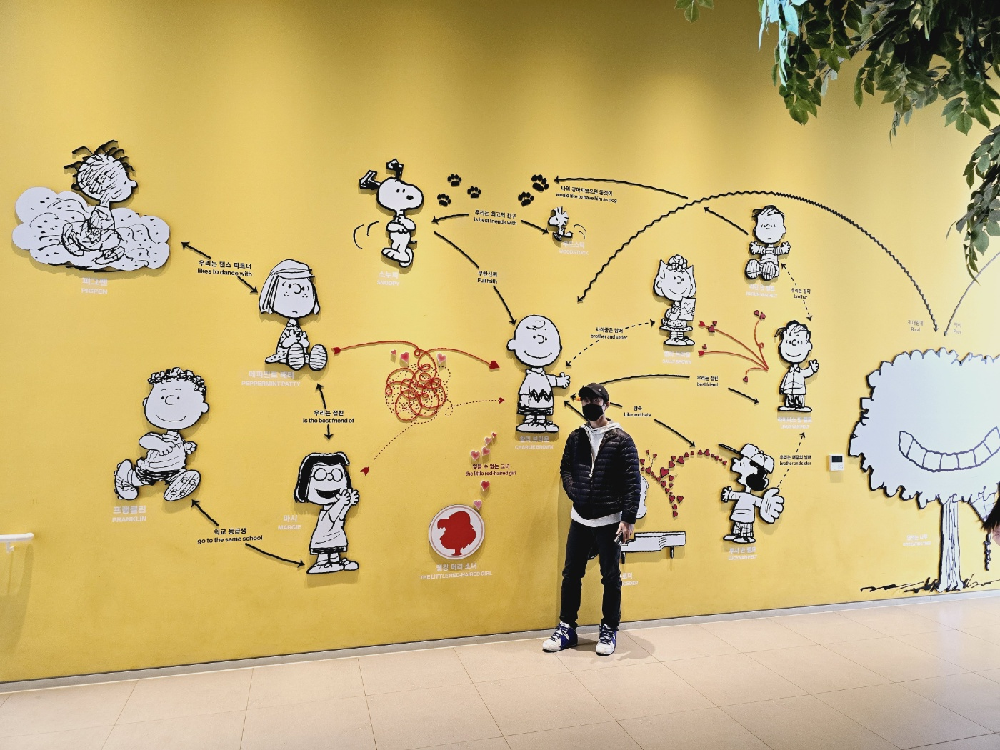 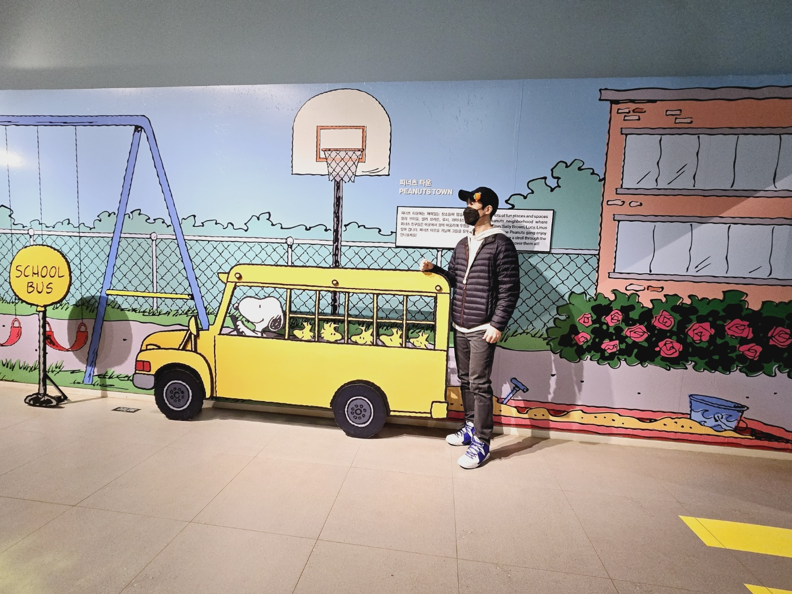 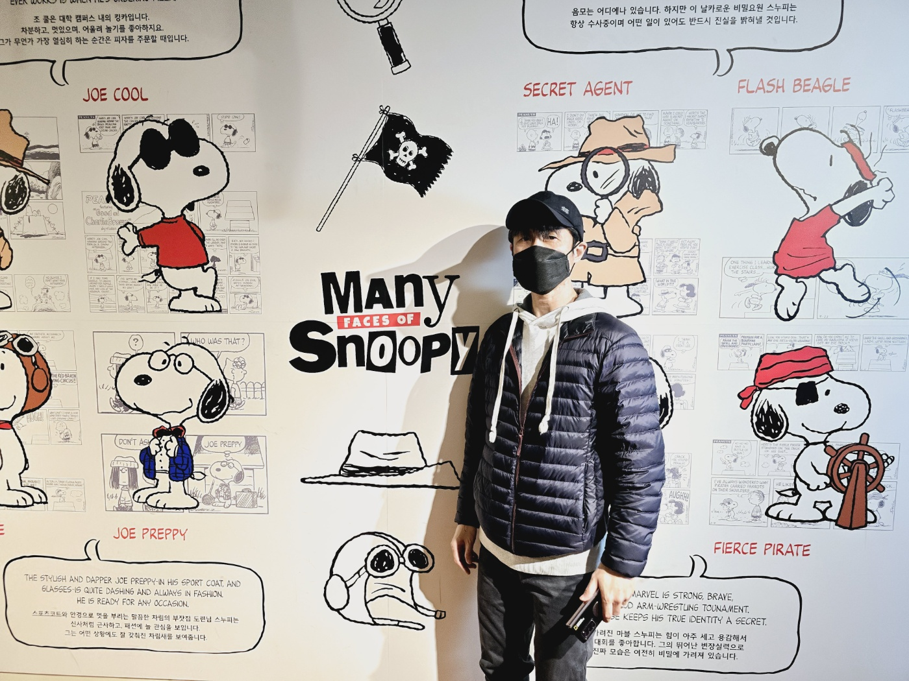 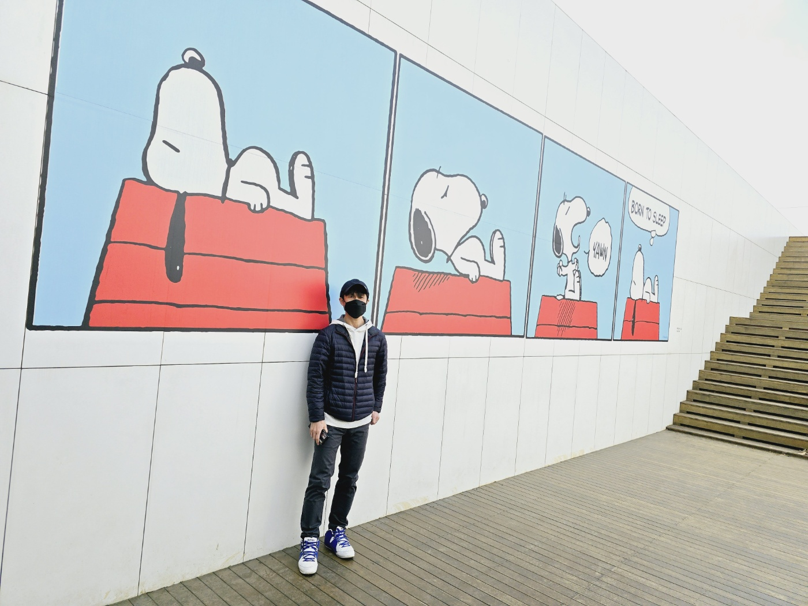스누피가든
주소: 제주특별자치도 제주시 특별자치도 구좌읍 금백조로 930
전화번호: 064-903-1111
와이프 추천으로 꿩 고기를 식사하기로 하여 해당 전문식당을 찾아 이동 하여 5시쯤 도착하였다.
메뉴에서 정식 2개를 주문하여 코스별로 나오는데 처음 샤브샤브로 야채와 고기를 같이 먹도록 나왔고,
매밀국수를 받아서 남은 샤브샤브에 넣어 먹었는데 순수 매밀로 되어있어 젓가락으로 먹기에 힘들었다는...
그 다음으로 구이용으로 철판에 감자, 양파, 양념된 고기등 같이 구웠는데 가장 맛이 있는 것 같았다.
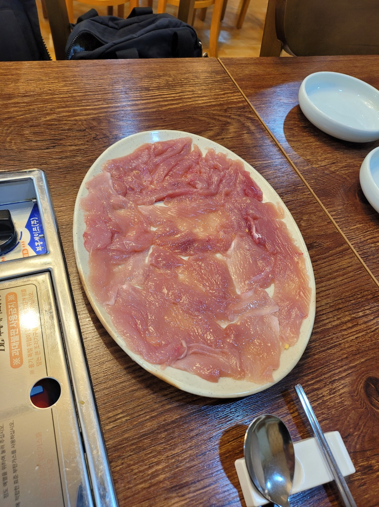 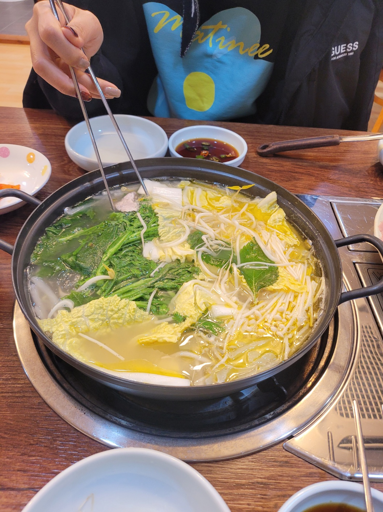 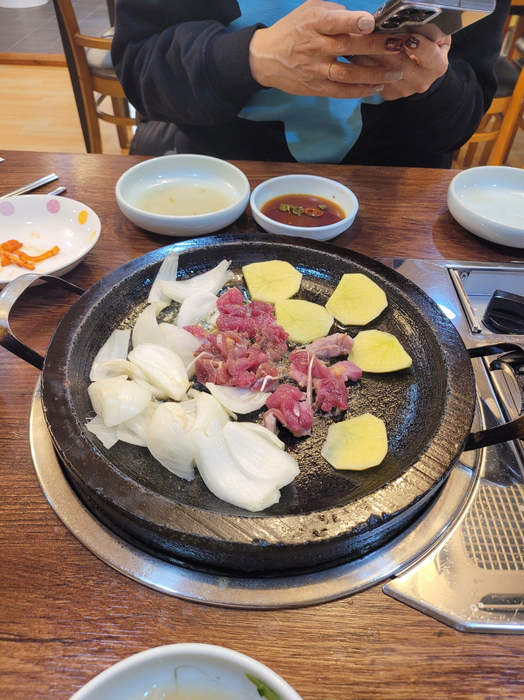꿩마을
주소: 서귀포시 표선면 가시로 56
전화번호: 064-787-4781

배도 채웠으니 이제 숙소로 이동해야 하므로 다음 목적지 플레이스캠프 설정하여 천천히 이동하였는데
여기는 여인들 위주로 가볍게 머물수 있는 호텔로 가격도 저렵하면서 여러 이벤트 시설이 설치되어 있고, 내부에 편의점 및 카페등 이용할 수 있어 편의성이 좋았다.


다음날 아침 11시 체크아웃한 후 와이프가 사격을 하고 싶다고하여 실탄사격장에 방문하였다.
그런데 생각해보면 군대에서도 사격을 별루 해본적이 없는데 와이프 덕분으로(?) 사격을 다 해본다는 ㅡ,.ㅡ;;
사격장에 도착했는데 생각보다 사람들이 많아서 조금은 기달려야 했는데...
입구 앞에서 대기시 오랜만에 듣는 소리라서 생각보다 총 소리가 크게 들렸다
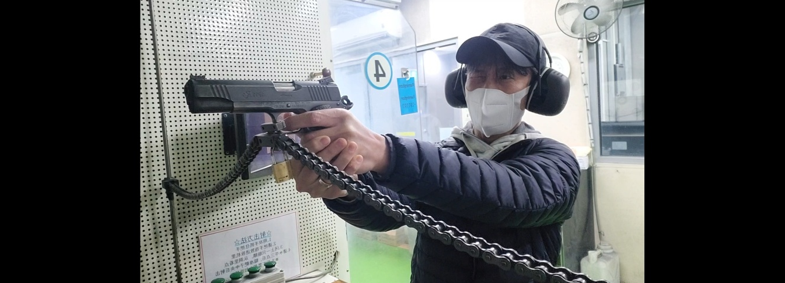


제주실탄사격장
주소: 제주특별자치도 서귀포시 소보리당로164번길 62 중문랜드3층
전화번호: 064-739-7007
사격 후 간단히 차 한잔하고 여유있게 드라이브 및 시내 구경하면서 시간을 보내다가 어느 정도 시간이되어
저녁 식사로 말 고기로 하기로 하였다.
서치를 하면서 찾아본 맛집을 하나 골라서 저녁 7시쯤 해당 식당에 도착 하였고, 메뉴에서 역시 정식으로 선택하였다.
처음 나온 음식은 육회 하고 사시미가 나왔는데 소고기 보다는 냄새가 적고 식감도 부드러워 어느 누구나 편히 먹을 수 있을듯 하다.
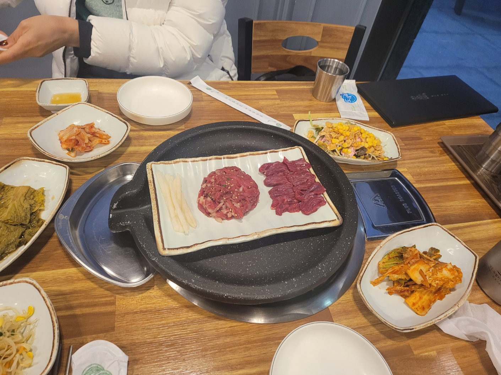다음 메뉴로는 구이가 나왔고, 역시나 소고기보다 냄새가 적고 질감도 좋아서 어린아이도 쉽게 먹을 수 있을 것 같다.
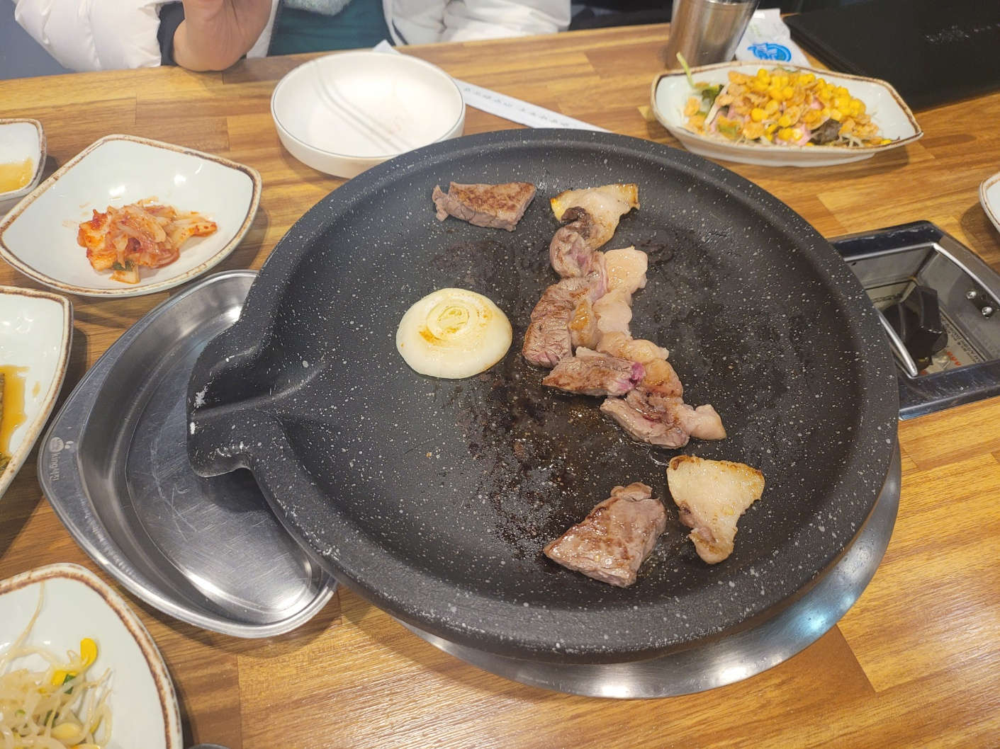다음은 갈비탕인데 일반 갈비탕과 별차이는 없었다. 그냥 갈비탕이라는.. (ㅡㅡ)
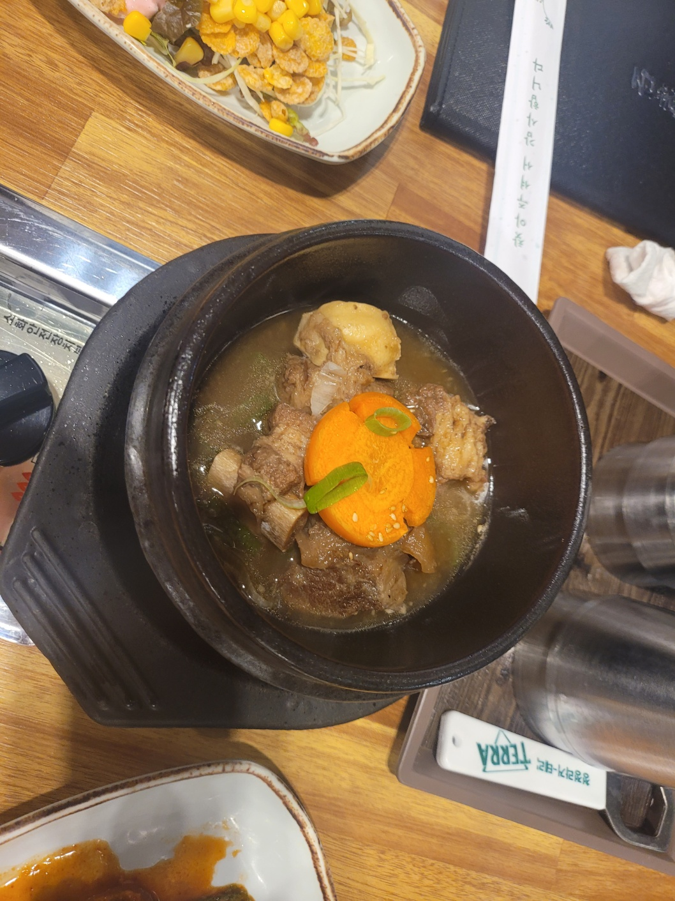마지막으로 샤브샤브로 배를 풀수있는 따뜻한 국물과 말 고기 특유의 맛을 볼 수 있는 메뉴로 마무리 하였다.
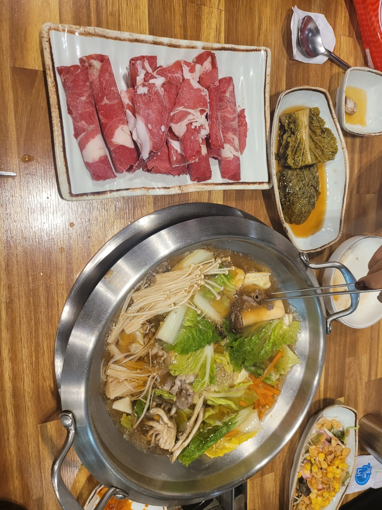 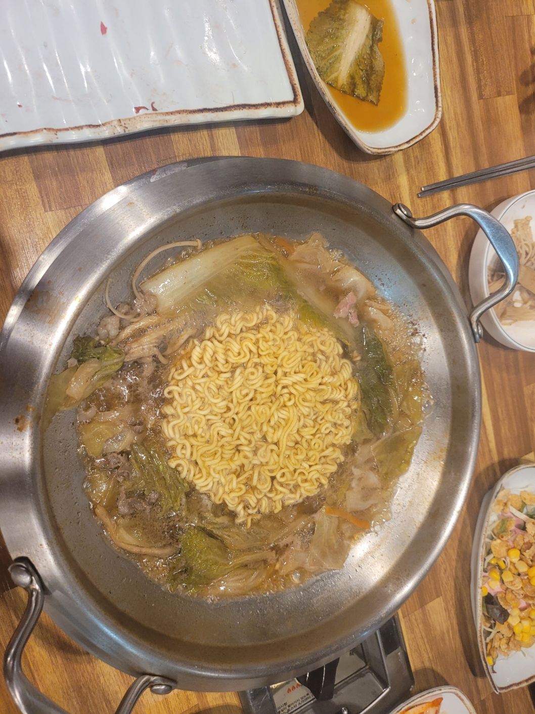배가 너무 불러서 바로 숙소로 이동하기로 했다. 행선지는 히든 클리프 호텔


이전 숙소보다는 넓어서 좀더 쾌적한 생활이 가능할 것 같았다.

여기는 내부에 수영장이 있어 내부 이용자들에게 사용할 수 있도록 개방되어 있어 편안히 사용할 수 있었다.


오전에 체크아웃하고 아침겸 점심으로 브런치 매장을 찾아봤는데 농구장이 있는 가계가 있어 해당 장소로 이동하였다.


야호~ 농구장이다, 한 커플이 농구를 하고있던데 본인들이 가져온 공인 듯 한였다..
농구공을 가지고 다니는 커플은 처음인 듯.. ㅡ_ㅡ


오버더센스
주소: 제주특별자치도 서귀포시 칠십리로 655
전화번호: 064-739-7007
간단히 배를 채운 후 해변가로 드라이브하면서 바다도 구경하고 해변가에 사람들 노는 모습도 보면서 시간을 보내다가
오후 3시쯤에 제주도에 오면 당연히 들렸다가 가는 곳으로 갈치 맛집으로 이동 하였다.
성산일출봉에서 가까운곳에 위치한 해마루라는 식당
주차공간도 넓어서 수월하게 주차할 수 있었다.
그런데 1층에 흑돼지 식당이 있어 처음에는 다른 곳에 온건가 생각하였다는...
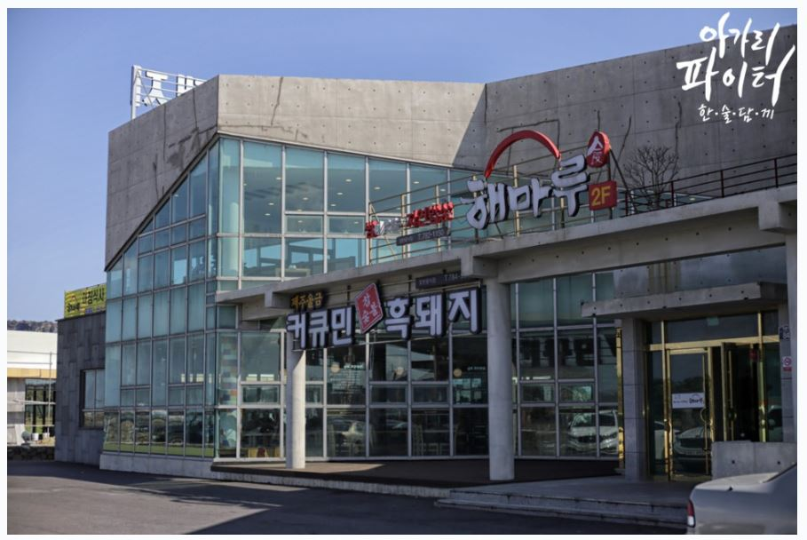갈치하면 구이라 생각하고 주문 하였다.
인당 성계미역국을 주는데 그 맛이 일품이였고, 밑반찬도 적절히 맛을 주어서 가볍게 먹을 수 있었다.
그리고 대망의 주인공 갈치구이가 나왔는데 그 크기가 크고 신선도가 좋아서 입에서 녹아 없어진다. @_@
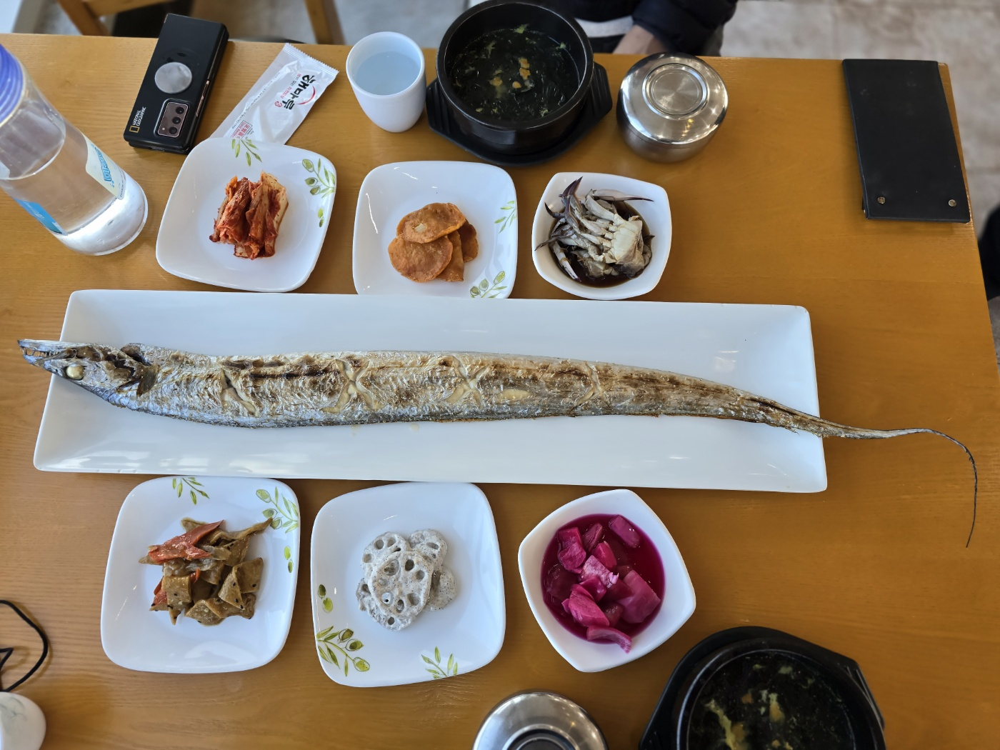해마루
주소: 서귀포시 성산읍 일출로 84
전화번호: 064-732-1150
이제 렌트카를 반납하러 이동하여 저녁 6시쯤 도착했는데 시간이 오버되어서 5천원 추가 결재 되었다. ㅎㅎ
김포로 가는 비행기 예약시간이 저녁 9시 30분이라 여유있게 공항에서 시간 보내다가 탑승하였고
김포에 밤 11시쯤 도착하여 리무진이 없어 지하철을 이용하여 무사히 집으로 도착하였다.
비행기티켓 및 렌트카, 숙소등은 '여기어때' 어플을 이용하여 쉽게 잡을 수 있었고 내역도 남아있어
나중에 비용 비교할 수 있어 앞으로 계속 사용할 듯 하다.